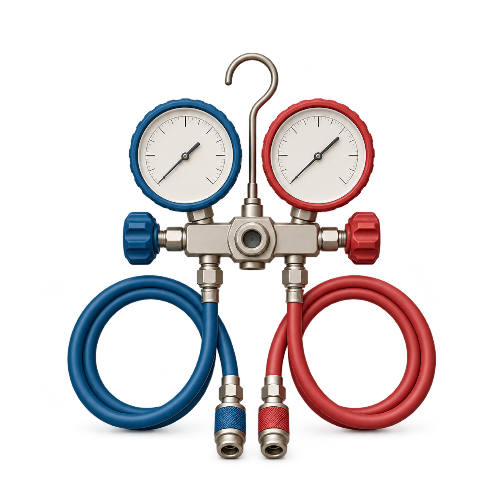
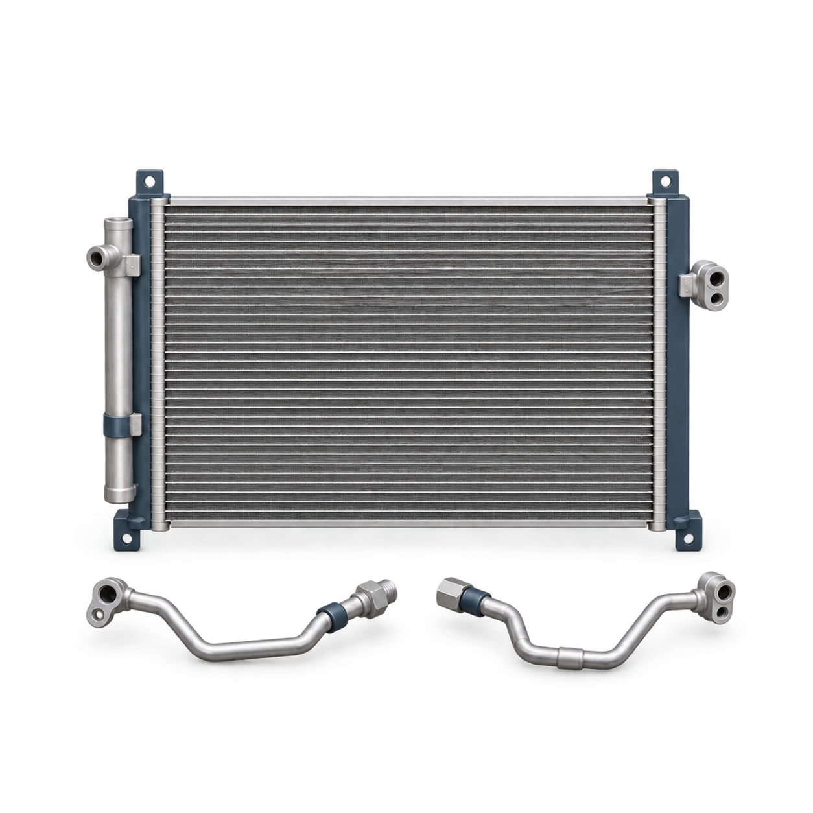
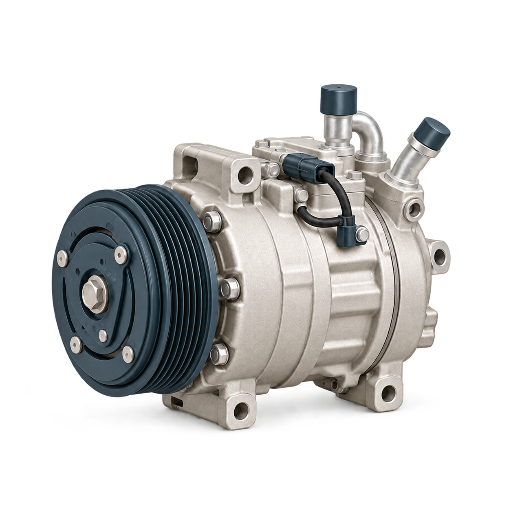
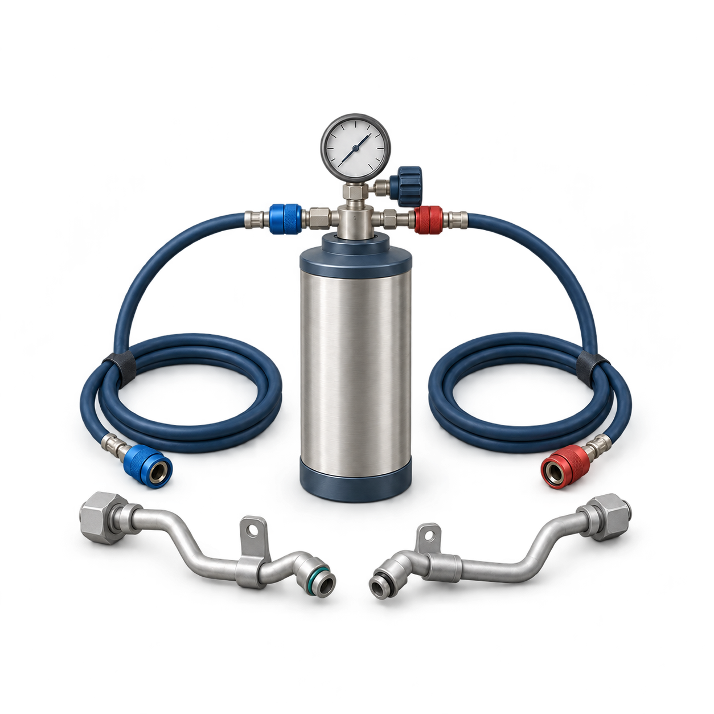
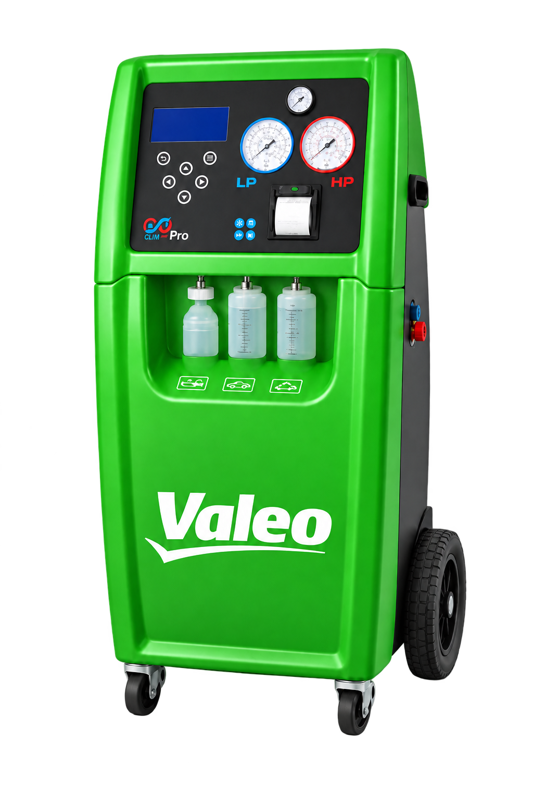

ВОЛЬТАЖ СЕРВИС · МОСКВА И ХИМКИ
Заправка и ремонт
автокондиционеров.
Вернём прохладу в ваш автомобиль.
Проверим систему, согласуем работы
и позаботимся о результате.

СТОИМОСТЬ ЗАПРАВКИ2 000 ₽
работа + 5 ₽/г хладагент
Рассчитать для моего автоминут
Ориентир для первичной диагностики и заправки. Ремонт может занять больше времени.
хладагент
Плюс 2 000 ₽ за работу.
Итог зависит от нужного количества и состояния системы.
ЧТО МЫ ДЕЛАЕМЧетыре задачи.
Четыре задачи.
Одна специализация.
От плановой заправки до ремонта агрегатов. Откройте услугу, чтобы узнать, с чего начинаем.
001 / АВТОКЛИМАТДиагностика
Диагностика
и заправка.
Проверка системы, вакуумирование и заправка по норме автомобиля.
- Проверка состояния системы
- Заправка по норме автомобиля
- Контроль результата
002 / АВТОКЛИМАТВернём системе
Вернём системе
исправную работу.
Найдём причину неисправности и согласуем необходимые работы.
- Диагностика неисправности
- Согласование решения
- Проверка после ремонта

003 / АВТОКЛИМАТЗабота о сердце
Забота о сердце
кондиционера.
Диагностика компрессора и подбор решения по результатам проверки.
- Проверка агрегата
- Оценка состояния узлов
- Согласование объёма ремонта

004 / АВТОКЛИМАТЧистота внутри
Чистота внутри
системы.
Очистка контура, когда она необходима по результатам диагностики.
- Оценка состояния контура
- Подбор способа очистки
- Подготовка к обслуживанию

Не уверены, какая услуга нужна вашему автомобилю?
Начать с симптомовПРОЗРАЧНАЯ СТОИМОСТЬ
Стоимость,
в которой всё ясно.
Стоимость заправки складывается из работы и количества хладагента. Посмотрите, как формируется предварительная сумма.
- Количество хладагента — по норме автомобиля
- Дополнительный ремонт согласуется отдельно
- Результаты работ — в заказ-наряде
РАСЧЁТ ЗАПРАВКИ
200 г1 200 г
Работа по заправке2 000 ₽
Хладагент 5 ₽ / г2 500 ₽
Предварительно4 500 ₽
Расчёт ориентировочный. Точную стоимость и состав работ подтвердит мастерская. Поиск места утечки оплачивается отдельно. Тип и норму хладагента определяет мастер.
В ДЕТАЛЯХ — НАША РАБОТА
Разные автомобили.
Одинаковое внимание.
От проверки системы до точной заправки.
Забота о комфорте — в каждом движении.
Сгенерированные визуализации обслуживания.
КАК МЫ РАБОТАЕМ
Внимание к деталям.
На каждом этапе.
ОБОРУДОВАНИЕ СЕРВИСАТочная заправка.
Точная заправка.
Под контролем.

Заправочная станция ValeoПРОВЕРКА · ВАКУУМИРОВАНИЕ · ЗАПРАВКА
01
Проверяем систему
Определяем состояние кондиционера и объём необходимых работ.
02
Согласовываем стоимость
Обсуждаем работы и сроки до начала обслуживания.
03
Выполняем обслуживание
Заправляем систему или устраняем обнаруженную неисправность.
04
Проверяем и выдаём документы
Заказ-наряд, рекомендации, фото или чек со станции с количеством хладагента и масла.
8 МАСТЕРСКИХ В МОСКВЕ И ХИМКАХ
Выберите свой сервис.
Пн–пт 10:00–19:00 · Сб–вс 10:00–17:00
Помочь с выборомМитино1-й Митинский переулок, 25Маршрут
НАЧНЁМ С ВАШЕГО ВОПРОСА
Что случилось
с кондиционером?
Расскажите, что вас беспокоит.
Поможем выбрать, с чего начать.
ВАШ АВТОКЛИМАТ
01 / 05Плохо охлаждает
НАЧНИТЕ С ДИАГНОСТИКИ
Заправка нужна не всегда.
Если воздух стал теплее, важно проверить систему и определить причину. Одного добавления хладагента может быть недостаточно.
Проверим работу системы и согласуем следующий шаг.
ТИПОВЫЕ СИТУАЦИИ
С чем к нам приезжают
Типовые ситуации.
Решение всегда начинается с проверки.
«В салоне стало
недостаточно прохладно»
Проверка системы и количества хладагента. Заправка — если она необходима.
Разобраться в симптомах«Заправлял недавно,
а холод снова пропал»
Поиск причины потери хладагента и согласование ремонта по результатам диагностики.
«При включении
слышен посторонний шум»
Диагностика компрессора и связанных узлов, чтобы определить источник шума.
«Кондиционер
не включается»
Проверим систему и определим причину отказа. Согласуем дальнейшие работы после диагностики.
ОТЗЫВЫ КЛИЕНТОВ
Лучше всего о нас
расскажут те,
кто уже приезжал.
Несколько отзывов о мастерской в Митино.
О ремонте, общении и внимании к автомобилю.
Выбрали другую мастерскую?Отзывы: Митино
РЕМОНТ КОМПРЕССОРАЯндекс Карты
«дали рекомендации, все объяснили, очень понравилось отношение и работа!»
татьяна к.
Митино · 24 марта 2025
РЕМОНТ СТАРТЕРА
«Сделали даже быстрее заявленного срока.»
markhipov95
Митино · Яндекс Карты
ДИАГНОСТИКА И РЕМОНТ
«Внимание к клиентам, приятное общение.»
Илья Масленников
Митино · 13 августа 2025
Фрагменты публичных отзывов. Полные тексты — на Яндекс Картах.
001Сколько стоит заправка моего автомобиля?
Сумма зависит от типа и количества хладагента, состояния системы и необходимых работ. Расчёт выше показывает пример. Окончательную стоимость подтвердит выбранная мастерская до начала обслуживания.
002Сколько времени занимает заправка?
Ориентир для первичной диагностики и заправки — 60 минут. Если потребуется поиск утечки или ремонт, время будет другим. Уточните срок при записи.
003Если кондиционер не холодит, его нужно заправить?
По одному симптому нельзя определить причину. Начните с диагностики: мастер проверит систему и объяснит, требуется ли заправка или ремонт.
004Нужно ли знать тип и количество хладагента?
Нет. Сообщите марку, модель и год автомобиля. Перед обслуживанием мастер уточнит нужный тип и норму заправки по данным автомобиля.
005Поиск утечки входит в стоимость?
Поиск места разгерметизации — дополнительная услуга. Состав проверки и стоимость согласуйте с мастерской до начала работ.
006Какие документы я получу?
После заправки предусмотрены заказ-наряд с рекомендациями и фото или чек со станции, где указано количество хладагента и масла. Условия гарантии уточните для выбранной услуги.
СЛЕДУЮЩАЯ ОСТАНОВКА — КОМФОРТ
Прохлада в салоне.
Спокойствие в дороге.
Выберите мастерскую.
Поможем разобраться с остальным.